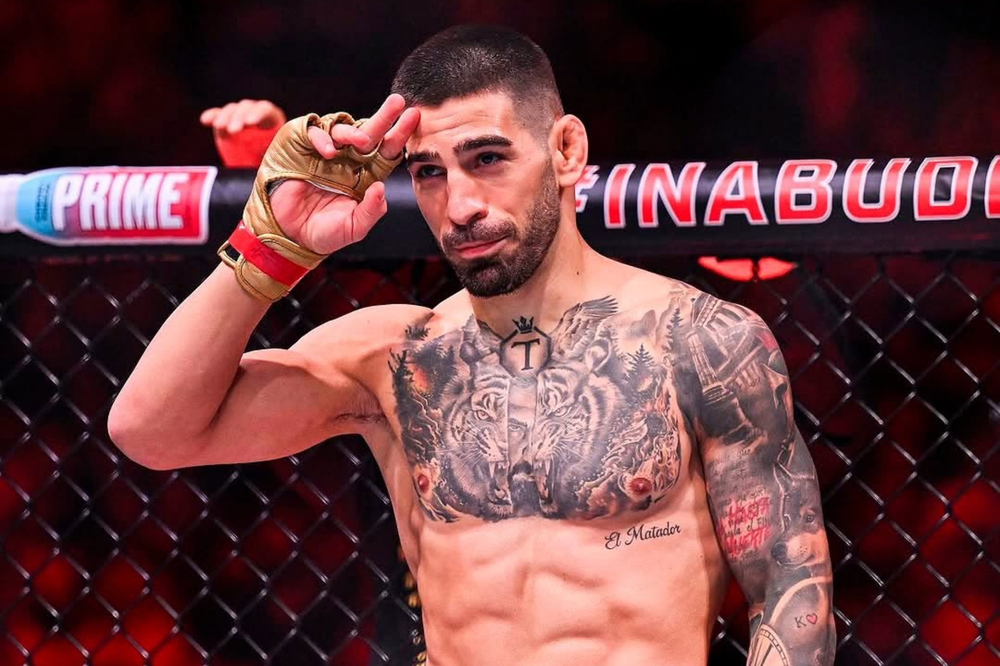

ILIA TOPURIA CHAD
Ilia Topuria Bendeliani (en georgiano: ილია თოფურია ბენდელიანი; Halle, Renania del Norte-Westfalia, Alemania; 21 de enero de 1997)[2]es un luchador de artes marciales mixto hispanogeorgiano.[3][4] Actualmente compite en la división de peso ligero de la Ultimate Fighting Championship, donde ha sido campeón mundial de peso ligero de UFC en una ocasión y campeón mundial de peso pluma de UFC; Ostentó el título desde febrero de 2024 hasta abril de 2025 con una defensa, dejando el título vacante para subir de división.[5] Es el primer peleador invicto en convertirse en doble campeón en la historia de la organización y el décimo en general.[